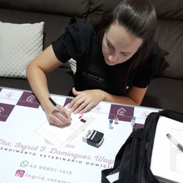
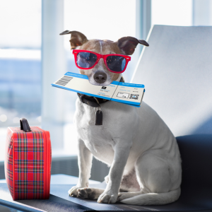

Nossos Serviços

Consultas

Vacinas

Atestado de Viagens

Exames
veterinário em domicílio
Consultas
Vacinas
Atestado de Viagens
Exames

A Dra. Ingrid é incrível! Meu cãozinho sempre fica calmo durante as consultas em casa. Recomendo a todos!" - Maria Esmeraldino
"Excelente profissional. A conveniência do atendimento em domicílio é imbatível!" - Ceres Domingues
"Muito querida e atenciosa! Obrigada ❤" - Ana Fragoso
"Um serviço com excelência e todo o cuidado com o animal para que o mesmo fique bem confortável." - Claudio Luiz
"A dra vacinou a dinky que √© uma cadelinha, e foi muito interessante ver como agiu para que ela ficasse tranquilinha, muito legal, gostamos muito e a dinky não teve nenhuma rea√ß√£o. E o melhor que não precisamos sair de casaü¶Æ" - Rossany Fernandes
Olá, eu sou a Dra. Ingrid Frances D. Wagner, médica veterinária especializada em cães, com mais de 5 anos de experiência na área. Minha paixão pelos animais me levou a focar no atendimento clínico especializado em cachorros, sempre priorizando um atendimento humanizado e acolhedor para cada pet e seus tutores.
Atendo na cidade de Cascavel, PR, oferecendo serviços dedicados e personalizados para garantir a saúde e o bem-estar dos seus amigos de quatro patas. Se você busca um atendimento de qualidade, feito com carinho e profissionalismo, estou à disposição para cuidar do seu pet com todo o respeito que ele merece.
Entre em contato agora mesmo para agendar um atendimento!
Agendar Agora